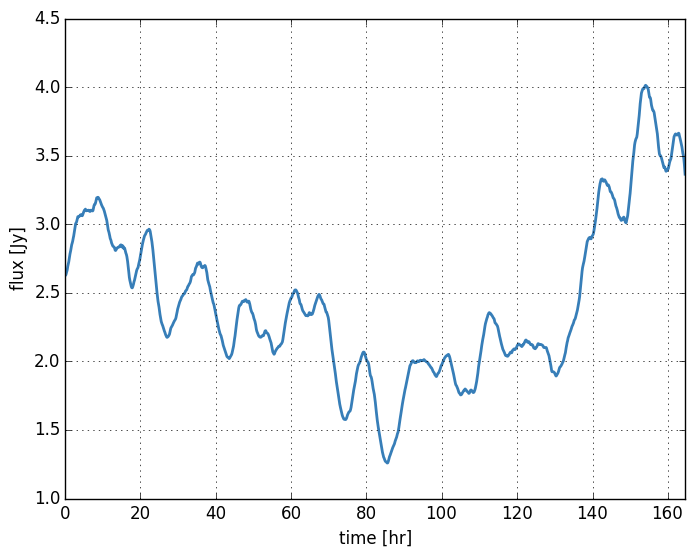

Time variability¶
This example demonstrates how to incorporate time variability into the scattering simulation. The python script covers:
- Scattering a timeseries of images (also called a movie).
- Incorporting the motion of the screen relative to the Earth.
- Calculating the total flux modulation introduced by the scattering.
- Using some optimized settings to speed up the calculation.
- Creating a neat movie of the results.
Scattering may impact your time variability science. You can use
scatterbrane to incorporate changes in your source or
your screen. This example may take a while to run so
consider reducing num_samples to something like 100 for
testing.
First let’s run through some initialization
from scatterbrane import Brane,utilities
import numpy as np
from scipy.ndimage import imread
import time
import matplotlib.pyplot as plt
plt.rcParams['image.origin'] = 'lower'
# set up logger
import logging
logging.basicConfig(level=logging.INFO)
logger = logging.getLogger()
For our source structure we will use the amazing New Horizon’s lookback image of Pluto:
# import our source image and covert it to gray scale
src_file = 'source_images/nh_01_stern_05_pluto_hazenew2.square.jpg'
rgb = imread(src_file)[::-1]
I = (np.array([0.2989,0.5870,0.1140])[np.newaxis,np.newaxis,:]*rgb).sum(axis=-1)
I = I*np.pi/I.sum()
# make up some scale for our image. Let's have it span 90 uas.
write_figs = True
wavelength=1e-3
FOV = 90.
dx = FOV/I.shape[0]
For this example we will be moving the screen across our field of view, so we will have the screen be a rectangle with the long edge along the x-axis (the direction of motion). Furthermore, we will set the major axis of the scattering to be along this axis (pa=None). When pa is set to any scalar value the scatter method has to do several rotations which can take up some time. We’re setting the scattering to be isotropic (anistropy=1) so we can skip these rotations and speed up the calculation.
# initialize the scattering screen @ 0.87mm
b = Brane(I,dx,wavelength=0.87e-3,nphi=(2**12,2**14),anisotropy=1,pa=None,r_inner=50,live_dangerously=True)
We have also increased the inner turbulence scale to make sure that the image
is smooth enough to validate our treatment of the scattering. By setting
live_dangerously = True we are skipping over the sanity checks (which involve
some FFTs) and now have the power to break things badly. Here is the
source structure and an example of the scattered image:

Now we’ll calculate the time coverage of our screen:
# estimate the time resolution of our simulation assuming some screen velocity.
screen_velocity = 200. #km/s
fs = screen_velocity/(b.screen_dx*b.ips) # Hz
num_samples = b.nphi[1]/b.ips - b.nx
logger.info('Number of samples: {0:g}'.format(num_samples))
logger.info('Sampling interval: {0:g}s'.format(1./fs))
logger.info('Time coverage: {0:g} days'.format(num_samples/fs/(3600.*24.)))
#INFO:root:Number of samples: 2529
#INFO:root:Sampling interval: 234.349s
#INFO:root:Time coverage: 6.85959 days
Now we are prepared to generate the screen phases and time series. For each frame (i.e. time sample) I will move the screen by a screen pixel offset of move_pix. I find that it is a good idea to set this to match the size of the image pixel which is just a factor ips. We will also update the source image at each sample to simulate a changing source structure (a slow total flux modulation).
# generate time series (this takes a while)
logger.info('generating time series...')
fluxes = []
frames = []
tic = time.time()
for i in range(num_samples):
# update source image to include a sinusoidal flux modulation
b.setModel(I*(1. - 0.4*np.sin(2*np.pi*i/(2*num_samples))), dx) # comment out to speedup
# generate scattered image
b.scatter(move_pix=i*b.ips)
# save our results and the total source flux
fluxes.append(b.iss.sum())
frames.append(b.iss)
logger.info('took {0:g}s'.format(time.time()-tic))
We have saved the total flux which we can plot as a function of time:
And from our time series we can create a movie
import matplotlib.animation as animation
i = 0
def updatefig(*args):
global i
i = (i + 1) % num_samples
im.set_array(utilities.smoothImage(frames[i],b.dx,2*b.dx))
return im
fig = plt.figure(figsize=(8,6))
im = plt.imshow(utilities.smoothImage(frames[0],b.dx,2*b.dx), cmap=cmap, animated=True,
extent=extent, interpolation=None)
plt.xlabel('$\Delta\\alpha$ [$\mu$as]')
plt.ylabel('$\Delta\delta$ [$\mu$as]')
ani = animation.FuncAnimation(fig, updatefig, interval=50, blit=False, frames=int(1000))
Writer = animation.writers['ffmpeg']
writer = Writer(fps=15, metadata=dict(artist='scatterbrane'), bitrate=1800)
ani.save('mov.mp4',writer=writer)
and post it to youtube!